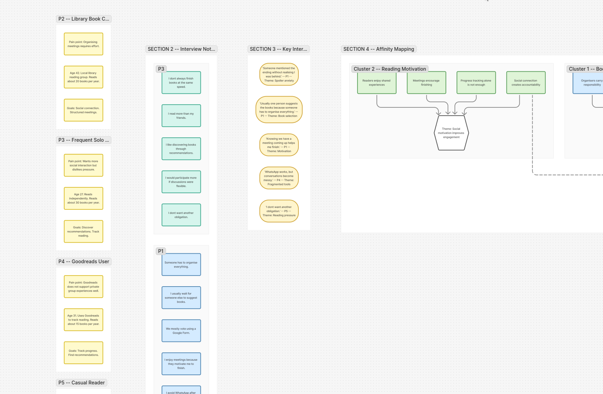

UI/UX Case Study
README Club
Designing a collaborative reading experience that helps book clubs discover, decide, read, and discuss together.

01
Project Overview
The Challenge
Book clubs create meaningful social connections, but many groups still rely on disconnected tools:
- WhatsApp for discussions
- Google Forms for voting
- Spreadsheets for tracking
- Goodreads for discovery
While these tools solve individual problems, they do not support the complete book club journey. Members often have to manually recreate an experience that should feel connected:
Discover→
Nominate→
Vote→
Read→
Discuss→
Review
How might we create one platform that helps readers participate in a book club while respecting different reading habits and schedules?
The Solution
README Club is a community reading platform designed to centralise the complete book club experience. The platform allows members to discover and suggest books, vote collaboratively, track reading progress, participate in spoiler-safe discussions, and share reviews and reflections.
The goal was not to replace individual reading platforms, but to create the missing collaborative layer between them.
Design Process
The project followed a user-centred design approach:
Research→
Define→
Ideate→
Prototype→
Test→
Iterate

02
Understanding the Problem
Before conducting research, I identified assumptions that needed validation.
Hypothesis 1
Book selection is often controlled by a small number of members.
Potential impact: Some members may feel disconnected from group decisions.
Hypothesis 2
Social accountability can influence reading motivation.
Potential impact: Readers may be more likely to complete books when they share the experience with others.
Hypothesis 3
Existing discussion tools do not support different reading speeds.
Potential impact: Readers may avoid conversations because of spoilers or because they feel behind.
03
Competitive Analysis
The goal was to understand how existing products support book discovery, reading tracking, community interaction, discussions, and group organisation.

Comparing five platforms across five dimensions
Finding 1 — Existing platforms solve individual problems
Goodreads and StoryGraph are effective for discovering and tracking books. However, collaborative activities such as choosing books, tracking group progress, and organising discussions usually happen elsewhere.
Finding 2 — Book clubs depend heavily on manual organisation
Members combine multiple tools to recreate one experience.
Opportunity: Create a dedicated workflow where the entire book club journey exists in one place.
04
User Research
5 semi-structured interviews were conducted remotely, 20 minutes each. Participants were encouraged to describe real experiences rather than hypothetical opinions.
Recruitment criteria
- Read at least 5 books per year
- Participated in a book club or reading community
- Used at least one reading-related platform
| ID | Profile | Behaviour |
|---|
| P1 | Monthly book club member | Reads 15 books/year |
| P2 | Library book club member | Reads 20 books/year |
| P3 | Frequent solo reader | Reads 30 books/year |
| P4 | Goodreads user | Reads 15 books/year |
| P5 | Casual reader | Reads 5 books/year |

Four major themes emerged from the analysis: book selection, reading motivation, spoiler anxiety, and fragmented tools.
05
Research Insights
Insight 1
Readers want influence without extra responsibility
3/5 participants described book selection as controlled by organisers.
"Usually one person suggests the books because someone has to organise everything."
"I rarely influence what the group reads."
Design opportunity: Create lightweight participation through nominations and voting.
Insight 2
Motivation comes from social connection
3/5 participants mentioned meetings or discussions helped them complete books.
"Knowing we have a meeting coming up helps me finish."
Design opportunity: Create progress visibility without pressure.
Insight 3
Readers need spoiler-safe discussions
4/5 participants mentioned avoiding discussions when behind.
"Someone mentioned the ending without realising I was behind."
Design opportunity: Adapt discussions based on reading progress.
Insight 4
The experience is fragmented
5/5 participants used multiple platforms.
"WhatsApp works, but conversations become messy."
Design opportunity: Create one connected reading environment.
06
Research-Based Personas
Personas were created by combining patterns observed during interviews rather than representing individual participants.
Claire
Library book club coordinator, 36 · Based on P1 + P2
"Someone has to organise everything."
Goals
- Keep the club active
- Reduce admin effort
Pain points
- Organising everything alone
- Low participation
Needs
- Structure
- Automation
- Shared responsibility
Emma
Occasional reader, 28 · Based on P3 + P5
"I don't want another obligation."
Goals
- Participate without pressure
Pain points
- Feeling excluded
- Difficulty keeping pace
Needs
- Flexibility
- Simple progress tracking
Lucas
Active reader, 30 · Based on P3 + P4
"I want my recommendations to count."
Goals
Pain points
- Limited contribution to decisions
Needs
- Discovery
- Recognition
- Contribution
07
Ideation & Design Exploration
Challenge 1 — How can members contribute without increasing organisation?
Admin-only selection
Rejected
Creates a passive audience.
Random book selection
Rejected
Removes community ownership.
Collaborative nomination
Selected
Allows participation while keeping organisation simple.
Challenge 2 — How can discussions remain inclusive?
Single group chat
Rejected
Creates spoiler risks.
Separate channels
Rejected
Creates unnecessary complexity.
Progress-based discussions
Selected
Balances safety and participation.
Information Architecture
Before designing individual screens, I mapped the product structure to ensure the experience followed a clear reading journey.
Library→
Nominate→
Vote→
Book of the Month→
Progress→
Discussion→
Reviews

08
Key Design Decisions
Collaborative Voting
Problem: Members felt disconnected from book selection.
Solution: Members nominate books and vote together.
Impact: Creates shared ownership of the selection process.

Reading Progress
Problem: Readers progress differently.
Solution: Simple statuses — Want to Read · Reading · Finished.
Impact: Creates visibility without pressure.

Spoiler Protection
Problem: Readers avoid discussions when behind.
Solution: Discussion access adapts to reading progress.
Trade-off: Less immediate conversation, but a safer experience.
09
Usability Testing
5 new participants (different from the research phase) were asked to complete three core tasks to validate workflow understanding, action clarity, and feature usefulness.
| Task | Success rate |
|---|
| Nominate a book | 4 / 5 |
| Vote for a book | 3 / 5 |
| Join discussion | 3 / 5 |
Task 1 — Nominate a Book
Problem: Users confused “Save” with “Nominate”.
Iteration: Changed CTA label from Save to Nominate for Club and added confirmation feedback.
Task 2 — Vote for a Book
Problem: Voting rules were unclear.
Iteration: Added remaining vote count, deadline information, and inline instructions.
Task 3 — Join Discussion
Problem: Users understood restrictions but wanted more explanation.
Iteration: Added contextual message: “Finish the book to join the conversation and avoid spoilers.”
Impact of Iterations
After iterations, users understood the purpose of each workflow more quickly, voting rules became clearer, and spoiler protection required less explanation.
Small changes in wording and visibility significantly improved usability. The final prototype better supported the original goal: creating a collaborative reading experience without adding organisational complexity.
10
Accessibility Considerations
Colour
Checked contrast ratios. Avoided colour-only communication.
Typography
Clear hierarchy and readable text sizes throughout.
Interaction
Clear states for selections, progress, locked discussions, and voting.
Responsive
Layouts adapted for desktop and mobile screens.
11
Technical Considerations
Because this project was developed as a functional prototype, technical constraints influenced design decisions. The goal was not only to design an ideal experience, but also to validate whether the experience could realistically be implemented.
Real-Time Collaboration
Firebase supported authentication, user data, and real-time updates — allowing collaborative features to behave closer to a real product experience.
Book Data
Book APIs introduced challenges around metadata availability, category inconsistencies, and different data formats. These limitations influenced how book information was displayed and filtered.
Frontend Architecture
Implemented with React, TypeScript, and Tailwind CSS. A component-based approach allowed faster iteration between design and implementation, supporting UX validation without becoming the focus of the product experience.
12
Reflection
README Club taught me that designing community products is not simply about adding social features. The challenge was balancing autonomy vs responsibility, motivation vs pressure, and openness vs spoiler protection.
The project strengthened my ability to transform research into insights, insights into design decisions, and design decisions into a validated product experience.
Étude de Cas UI/UX
README Club
Concevoir une expérience de lecture collaborative qui aide les clubs de lecture à découvrir, décider, lire et discuter ensemble.
01
Aperçu du Projet
Le Défi
Les clubs de lecture créent des liens sociaux significatifs, mais de nombreux groupes s’appuient encore sur des outils déconnectés :
- WhatsApp pour les discussions
- Google Forms pour les votes
- Tableurs pour le suivi
- Goodreads pour la découverte
Ces outils résolvent des problèmes individuels, mais ne soutiennent pas le parcours complet d’un club de lecture. Les membres doivent souvent recréer manuellement une expérience qui devrait se sentir connectée :
Découvrir→
Nommer→
Voter→
Lire→
Discuter→
Critiquer
Comment créer une seule plateforme qui aide les lecteurs à participer à un club de lecture tout en respectant leurs habitudes et horaires de lecture différents ?
La Solution
README Club est une plateforme de lecture communautaire conçue pour centraliser l’expérience complète d’un club de lecture. La plateforme permet aux membres de découvrir et suggérer des livres, voter collectivement, suivre leur progression de lecture, participer à des discussions sans risque de spoilers, et partager avis et réflexions.
L’objectif n’était pas de remplacer les plateformes de lecture individuelles, mais de créer la couche collaborative manquante entre elles.
Processus de Design
Le projet a suivi une approche de conception centrée sur l’utilisateur :
Recherche→
Définir→
Idéer→
Prototyper→
Tester→
Itérer
02
Comprendre le Problème
Avant de mener des recherches, j’ai identifié des hypothèses à valider.
Hypothèse 1
La sélection des livres est souvent contrôlée par un petit nombre de membres.
Impact potentiel : Certains membres peuvent se sentir déconnectés des décisions du groupe.
Hypothèse 2
La responsabilité sociale peut influencer la motivation à lire.
Impact potentiel : Les lecteurs sont plus susceptibles de terminer les livres lorsqu’ils partagent l’expérience avec d’autres.
Hypothèse 3
Les outils de discussion existants ne s’adaptent pas aux différentes vitesses de lecture.
Impact potentiel : Les lecteurs peuvent éviter les conversations à cause des spoilers ou parce qu’ils se sentent en retard.
03
Analyse Concurrentielle
L’objectif était de comprendre comment les produits existants soutiennent la découverte de livres, le suivi de lecture, les interactions communautaires, les discussions et l’organisation de groupe.
Comparaison de cinq plateformes selon cinq dimensions
Résultat 1 — Les plateformes existantes résolvent des problèmes individuels
Goodreads et StoryGraph sont efficaces pour découvrir et suivre des livres. Cependant, les activités collaboratives telles que choisir des livres, suivre la progression du groupe et organiser des discussions se déroulent généralement ailleurs.
Résultat 2 — Les clubs de lecture dépendent fortement de l’organisation manuelle
Les membres combinent plusieurs outils pour recréer une seule expérience.
Opportunité : Créer un flux de travail dédié où l’intégralité du parcours du club de lecture existe en un seul endroit.
04
Recherche Utilisateur
5 entretiens semi-directifs ont été conduits à distance, de 20 minutes chacun. Les participants ont été encouragés à décrire des expériences réelles plutôt que des opinions hypothétiques.
Critères de recrutement
- Lit au moins 5 livres par an
- A participé à un club de lecture ou une communauté de lecture
- A utilisé au moins une plateforme liée à la lecture
| ID | Profil | Comportement |
|---|
| P1 | Membre d’un club de lecture mensuel | Lit 15 livres/an |
| P2 | Membre d’un club de lecture de bibliothèque | Lit 20 livres/an |
| P3 | Lecteur solo fréquent | Lit 30 livres/an |
| P4 | Utilisateur Goodreads | Lit 15 livres/an |
| P5 | Lecteur occasionnel | Lit 5 livres/an |
Quatre grands thèmes ont émergé de l’analyse : la sélection des livres, la motivation à lire, l’anxiété des spoilers et les outils fragmentés.
05
Insights de Recherche
Insight 1
Les lecteurs veulent de l’influence sans responsabilités supplémentaires
3/5 participants ont décrit la sélection des livres comme contrôlée par les organisateurs.
« En général, une seule personne suggère les livres car quelqu’un doit tout organiser. »
« J’influence rarement ce que le groupe lit. »
Opportunité de conception : Créer une participation légère via des nominations et des votes.
Insight 2
La motivation vient de la connexion sociale
3/5 participants ont mentionné que les réunions ou discussions les aidaient à terminer les livres.
« Savoir qu’une réunion approche m’aide à finir. »
Opportunité de conception : Créer une visibilité de la progression sans pression.
Insight 3
Les lecteurs ont besoin de discussions sans spoilers
4/5 participants ont mentionné éviter les discussions lorsqu’ils étaient en retard.
« Quelqu’un a mentionné la fin sans réaliser que j’étais en retard. »
Opportunité de conception : Adapter les discussions en fonction de la progression de lecture.
Insight 4
L’expérience est fragmentée
5/5 participants utilisaient plusieurs plateformes.
« WhatsApp fonctionne, mais les conversations deviennent désordonnées. »
Opportunité de conception : Créer un environnement de lecture connecté.
06
Personas Basées sur la Recherche
Les personas ont été créées en combinant des schémas observés lors des entretiens plutôt qu’en représentant des participants individuels.
Claire
Coordinatrice d’un club de lecture, 36 ans · Basée sur P1 + P2
« Quelqu’un doit tout organiser. »
Objectifs
- Maintenir le club actif
- Réduire l’effort administratif
Points de friction
- Tout organiser seule
- Faible participation
Besoins
- Structure
- Automatisation
- Responsabilité partagée
Emma
Lectrice occasionnelle, 28 ans · Basée sur P3 + P5
« Je ne veux pas une obligation de plus. »
Objectifs
Points de friction
- Se sentir exclue
- Difficulté à suivre le rythme
Besoins
- Flexibilité
- Suivi de progression simple
Lucas
Lecteur actif, 30 ans · Basé sur P3 + P4
« Je veux que mes recommandations comptent. »
Objectifs
- Influencer les choix du groupe
Points de friction
- Contribution limitée aux décisions
Besoins
- Découverte
- Reconnaissance
- Contribution
07
Idéation & Exploration du Design
Défi 1 — Comment les membres peuvent-ils contribuer sans alourdir l’organisation ?
Sélection par l’admin
Rejeté
Crée un public passif.
Sélection aléatoire
Rejeté
Retire l’appropriation communautaire.
Nomination collaborative
Sélectionné
Permet la participation tout en simplifiant l’organisation.
Défi 2 — Comment les discussions peuvent-elles rester inclusives ?
Chat de groupe unique
Rejeté
Crée des risques de spoilers.
Canaux séparés
Rejeté
Crée une complexité inutile.
Discussions par progression
Sélectionné
Équilibre sécurité et participation.
Architecture de l’Information
Avant de concevoir les écrans individuels, j’ai cartographié la structure du produit pour m’assurer que l’expérience suivait un parcours de lecture clair.
Bibliothèque→
Nommer→
Voter→
Livre du Mois→
Progression→
Discussion→
Critiques
08
Décisions Clés de Design
Vote Collaboratif
Problème : Les membres se sentaient déconnectés de la sélection des livres.
Solution : Les membres nominent des livres et votent ensemble.
Impact : Crée une appropriation partagée du processus de sélection.
Progression de Lecture
Problème : Les lecteurs progressent différemment.
Solution : Statuts simples — À lire · En cours · Terminé.
Impact : Crée une visibilité sans pression.
Protection contre les Spoilers
Problème : Les lecteurs évitent les discussions lorsqu’ils sont en retard.
Solution : L’accès aux discussions s’adapte à la progression de lecture.
Compromis : Moins de conversations immédiates, mais une expérience plus sûre.
09
Tests d’Utilisabilité
5 nouveaux participants (différents de la phase de recherche) ont été invités à compléter trois tâches principales pour valider la compréhension des flux, la clarté des actions et l’utilité des fonctionnalités.
| Tâche | Taux de succès |
|---|
| Nommer un livre | 4 / 5 |
| Voter pour un livre | 3 / 5 |
| Rejoindre une discussion | 3 / 5 |
Tâche 1 — Nommer un Livre
Problème : Les utilisateurs confondaient « Enregistrer » avec « Nommer ».
Itération : L’étiquette du CTA a été changée de Enregistrer à Nommer pour le Club et un retour de confirmation a été ajouté.
Tâche 2 — Voter pour un Livre
Problème : Les règles de vote n’étaient pas claires.
Itération : Ajout du nombre de votes restants, des informations sur la date limite et des instructions intégrées.
Tâche 3 — Rejoindre une Discussion
Problème : Les utilisateurs comprenaient les restrictions mais voulaient plus d’explications.
Itération : Ajout d’un message contextuel : « Terminez le livre pour rejoindre la conversation et éviter les spoilers. »
Impact des Itérations
Après les itérations, les utilisateurs ont compris le but de chaque flux plus rapidement, les règles de vote sont devenues plus claires et la protection contre les spoilers a nécessité moins d’explications.
De petits changements dans la formulation et la visibilité ont significativement amélioré l’utilisabilité. Le prototype final a mieux soutenu l’objectif initial : créer une expérience de lecture collaborative sans ajouter de complexité organisationnelle.
10
Considérations d’Accessibilité
Couleur
Ratios de contraste vérifiés. Communication non basée uniquement sur la couleur.
Typographie
Hiérarchie claire et tailles de texte lisibles.
Interaction
États clairs pour les sélections, la progression, les discussions verrouillées et les votes.
Responsive
Mises en page adaptées aux écrans desktop et mobile.
11
Considérations Techniques
Ce projet ayant été développé comme un prototype fonctionnel, les contraintes techniques ont influencé les décisions de design. L’objectif n’était pas seulement de concevoir une expérience idéale, mais aussi de valider si cette expérience pouvait être réalistement implémentée.
Collaboration en Temps Réel
Firebase a pris en charge l’authentification, les données utilisateur et les mises à jour en temps réel — permettant aux fonctionnalités collaboratives de se comporter de manière plus proche d’un vrai produit.
Données des Livres
Les API de livres ont introduit des défis liés à la disponibilité des métadonnées, aux incohérences des catégories et aux différents formats de données. Ces limitations ont influencé la façon dont les informations sur les livres étaient affichées et filtrées.
Architecture Frontend
Implémenté avec React, TypeScript et Tailwind CSS. Une approche basée sur les composants a permis une itération plus rapide entre le design et l’implémentation, soutenant la validation UX sans que cela devienne le centre de l’expérience produit.
12
Réflexion
README Club m’a appris que concevoir des produits communautaires ne consiste pas simplement à ajouter des fonctionnalités sociales. Le défi était d’équilibrer : autonomie vs responsabilité, motivation vs pression, et ouverture vs protection contre les spoilers.
Ce projet a renforcé ma capacité à transformer la recherche en insights, les insights en décisions de design, et les décisions de design en une expérience produit validée.